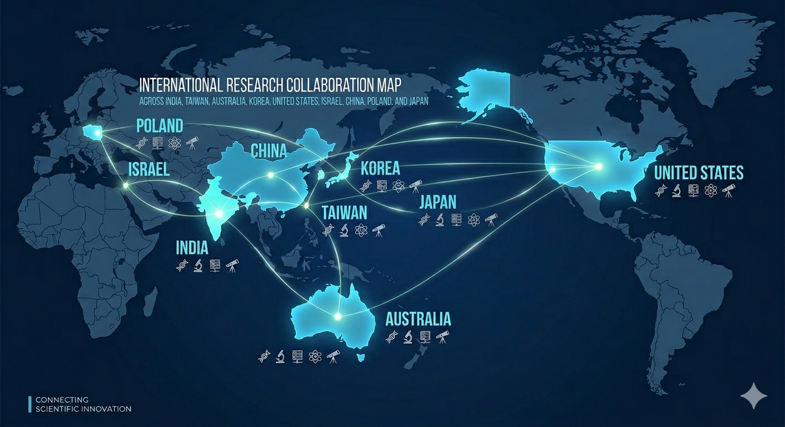
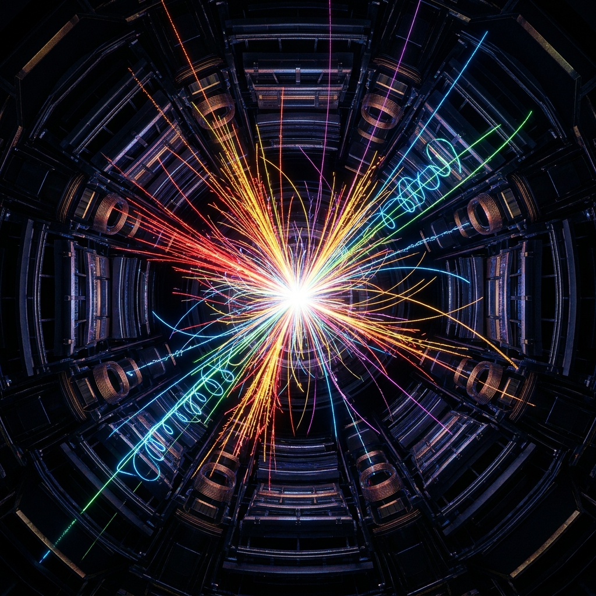
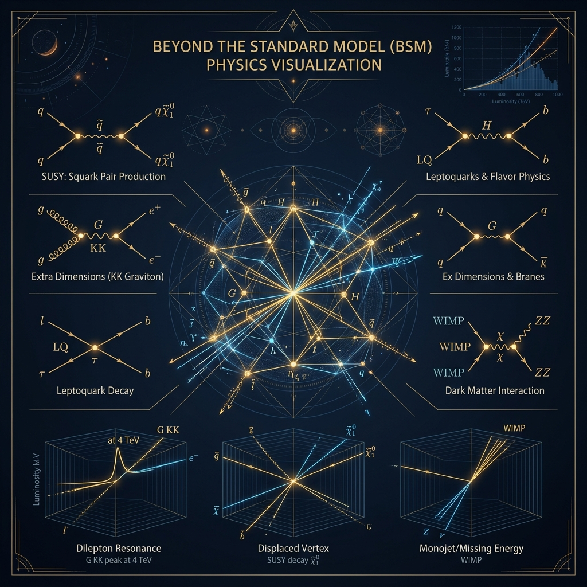
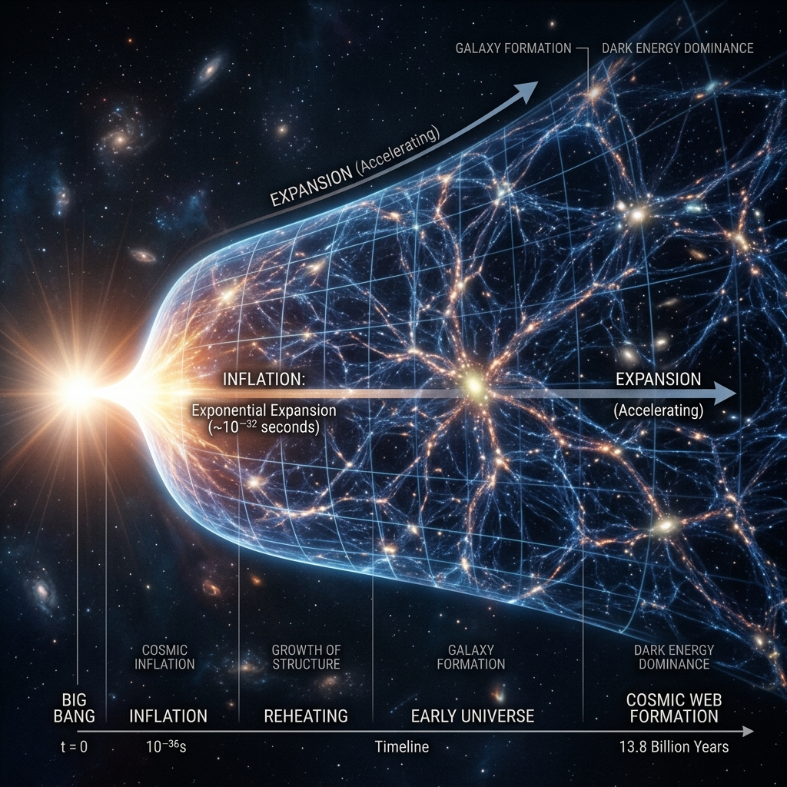
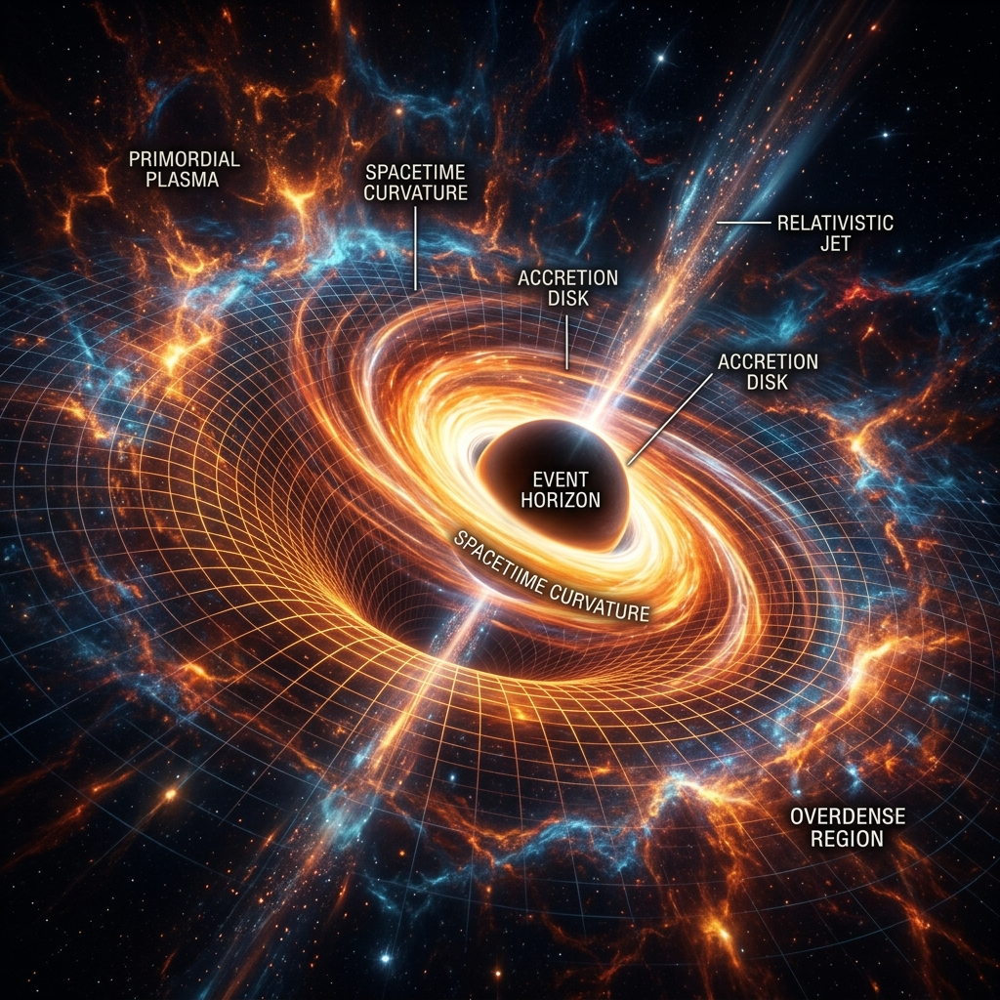
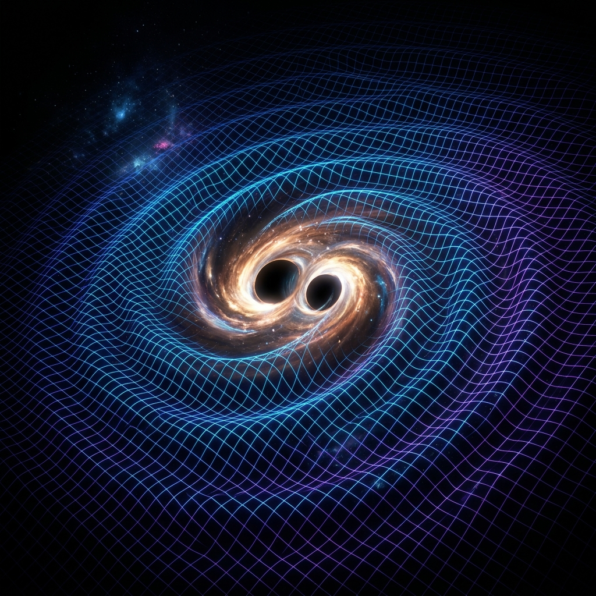

Theoretical Physicist
Welcome to my page. I am Dr. Ouseph C.J. —
Theoretical Physicist, Data Scientist & Quantitative Researcher.
I am a theoretical physicist with over a decade of experience spanning high-energy particle physics, early-universe cosmology, and advanced data analytics. My research sits at the intersection of fundamental science and quantitative methods — building rigorous mathematical models, running large-scale simulations, and extracting insight from complex, high-dimensional datasets.
Application of advanced statistical and machine-learning techniques to extract meaningful physical signals from large, complex datasets — bridging theoretical predictions with real observational data.
Design and execution of high-fidelity numerical simulations of physical systems — from LHC collision environments to early-universe cosmological dynamics — enabling precision predictions and discovery-reach forecasts.

Searches for new physics at the LHC, HL-LHC, Belle II, CEPC, and Forward Physics Facility, including axion-like particles (ALPs), dark photons, leptoquarks, and sterile neutrinos.
Selected Papers:

Beyond-Standard-Model phenomenology focusing on axion-like particles, dark photons, leptoquarks, and sterile neutrinos. We develop effective field theory frameworks and perform detailed collider simulations at the LHC, HL-LHC, Belle II, and future Higgs factories using tools such as MadGraph and Pythia to derive exclusion limits and discovery prospects.
Selected Publications:

Early-universe cosmology with particular emphasis on Higgs inflation models incorporating four-form couplings and their observational consequences. We investigate connections between inflationary dynamics, primordial gravitational waves, and consistency with current and future cosmological datasets including NANOGrav PTA signals.
Selected Publications:

Formation mechanisms of primordial black holes (PBHs) from modified Higgs inflation scenarios, their role as dark matter candidates, and multi-messenger signatures including gamma-ray observations and gravitational waves. We study double-peaked gamma-ray spectra and connections to PTA signals.
Selected Publications:

Probing new physics and early-universe phenomena through pulsar timing array (PTA) signals such as NANOGrav, as well as future gravitational wave detectors. Special focus on connections between primordial black holes, modified inflation, and stochastic gravitational wave backgrounds.
Selected Publications:

Actively involved in graduate and undergraduate teaching as well as student mentorship during doctoral studies at National Tsing Hua University. Contributed to courses in theoretical physics and provided guidance to master's and exchange students on collider phenomenology and beyond-Standard-Model physics. Mentoring resulted in co-authored publications in high-impact journals including JHEP and Physical Review D.
Mentored 3 graduate/exchange students at National Tsing Hua University (2021–2024), resulting in co-authored publications in JHEP and Physical Review D.
Mr. Chen Wang & Mr. Wanyon Hsiao
Master's students — Gauge-boson couplings of axion-like particles (ALPs)
Mr. Thong T.Q. Nguyen
Exchange student — Leptoquark search at Forward Physics Facility
Where theoretical physics meets practical innovation — two passion projects that blend cutting-edge technology with real-world impact.
A full-stack real-time Progressive Web App (PWA) for healthcare shift scheduling with live team chat, gamified productivity tools, and multi-country holiday integration.
An interactive browser-based dashboard for exploring Higgs inflation models in real time — a powerful tool for both research communication and teaching.
More projects and code experiments available on my GitHub profile
{kind=link}
{kind=link}
{kind=link}
{kind=link}
{kind=link}
{kind=link}
{kind=link}
{kind=link}
{kind=link}
{kind=link}
{kind=link}
{kind=link}
{kind=link}